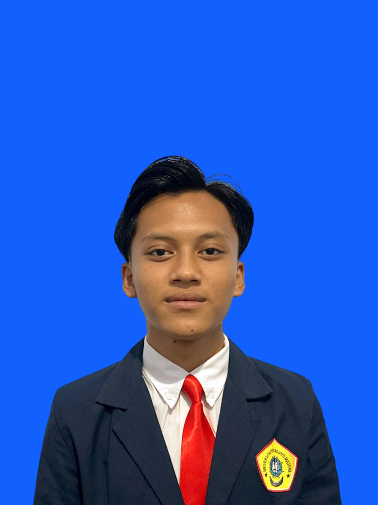

|
 |
M. Arsyadani |
| Probolinggo | m.arsyadani0427@gmail.com | |
| +62 81331644381 | (aarsyadanii) |
| PROFIL | |
|---|---|
| Mahasiswa Sistem Informasi dengan IPK 3.90 berpengalaman Praktek Kerja Lapangan di teknisi komputer yang mempelajari penggunaan struktur data, spesifikasi program pengajuan unit program dan masih banyak lagi juga pengalaman dalam kepanitiaan yang di adakan oleh himpunan mahasiswa system informasi (HIMASI) yaitu EFIS tepatnya di bagian sie acara. Yang mana saya dapat berorientasi pada penyelesaian susunan teknis dan memiliki kemampuan kerja tim yang baik. | |
| PENDIDIKAN | ||
|---|---|---|
| No | Nama Sekolah | Tahun |
| 1. | SDN BLADO WETAN | (2013 - 2019) |
| 2. | SMPN 2 GENDING | (2019 - 2022) |
| 3. | SMKN 1 GENDING | (2022 - 2025) |
| 4. |
UNIVERSITAS TRUNOJOYO MADURA Fakultas Teknik | Sistem Informasi |
(2025 - sekarang) |
| ORGANISASI | |
|---|---|
| Nama Organisasi | Posisi |
| Unit Kegiatan Mahasiswa FT Blue Murder | Anggota |
| Ikatan Mahasiswa Probolinggo (IKAMAPRO) | Anggota POSDM |
| SERTIFIKASI & PELATIHAN | |
|---|---|
| Nama Kegiatan | Tahun |
|
Uji Kompetensi Rekayasa Perangkat Lunak Aplikasi To-Do List |
Mei 2025 |
|
Webinar Dies Natalis Kencana Ke 19 Strategi personal branding lewat portofolio online (Linkedin) dan CV professional sebagai bekal dunia kerja |
Nov 2025 |
|
Kepanitiaan EFIS 2025 Sie ACARA |
2025 |
| BAHASA & KEMAMPUAN |
|---|
|
| college-experience | Book Collection |